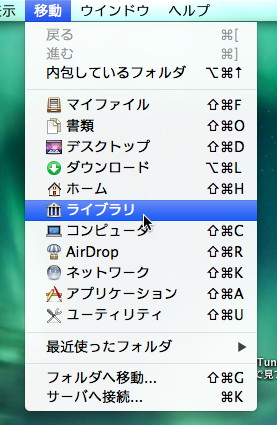
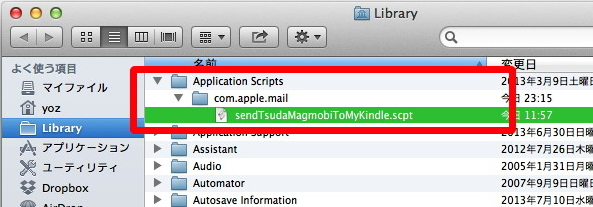
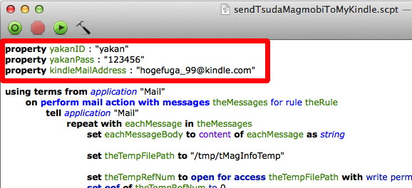
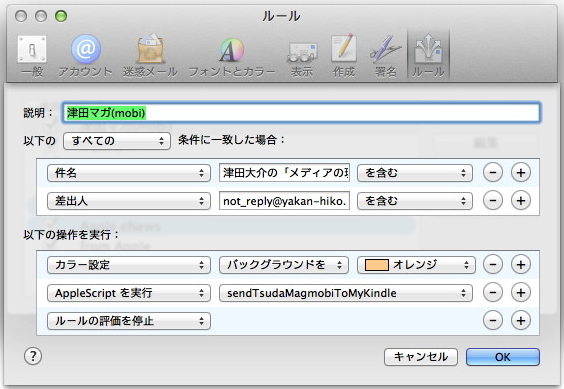
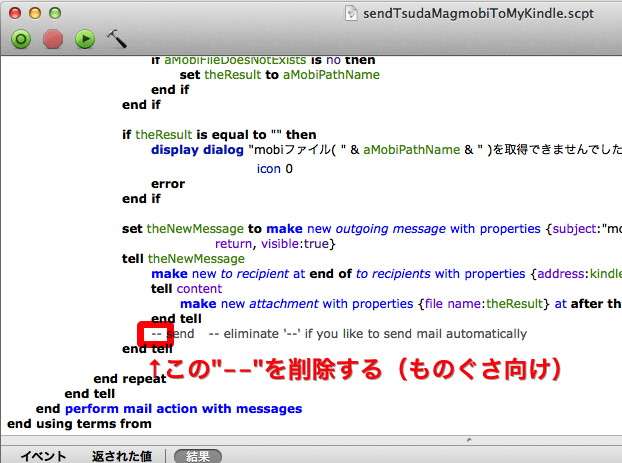

概要
sendTsudaMagmobiToMyKindleは、Macの標準メールクライアント「メール(Mail.app)」用のルールで使用するAppleScriptです。
目的
メディアアクティビスト／ジャーナリストである津田大介氏のメールマガジン『津田大介の「メディアの現場」』は、まぐまぐ、夜間飛行等のメールマガジンプロバイダで配信されています。
中でも、夜間飛行での配信は、通常のPlain Textのメールで配信されるほか、サイトからはepubやmobiのファイルをダウンロードでき、電子書籍端末で快適に読むことができるのでガジェヲタまっしぐら、という感じで素敵です。
ただ、epubやmobiをダウンロードするには、メール着弾後、メール内に書いてあるURLにアクセスし、IDとパスワードでログインする必要があり、また、ダウンロードした後にもファイルを電子書籍端末に転送する必要があります。手動で！ めんどくさい！ 耐えられない！
というわけで、自動化スクリプトをその面倒くさい手動手順以上の手間をかけて作ってみました。
割と限定された環境で動作するので、そのまま恩恵を得られる人はそんなに多くはないかも。
動作環境
ローカルな環境
- Mac OS X 10.8 (で確認したという話で、それ以前でも使えるとは思います)
- メール(Mail.app) 6.5 (で確認したと言う話で、それ以前でも使えるとは思いますが、6.2あたりだとフィルタでAppleScriptが動かないという噂もあるようです。正直、このあたりの事情はサポートできません)
- AppleScript エディタ 2.5.1 (で確認しry
メルマガ購読環境
- 夜間飛行
- 津田マガを購読している必要があります (つか読んでない人は必要ないでしょ)
- Kindle PaperWhite/Fire等、mobiファイルを読める電子書籍端末
- Kindleにファイルを送り付けるための、Send-to-Kindle Eメールアドレスは必須です。
- Send-to-Kindle Eメールアドレスを忘れちゃったうっかりさんは、AmazonのMy Kindleのページの「端末の管理」を見るといいですよ。
- Sent-to-Kindle Eメールアドレスが、メール(Mail.app)から送信するアカウントからのドキュメントを受け付けることを確認しておいてください。My Kindleの「パーソナル・ドキュメント設定」から確認／設定できます。
インストール方法
AppleScriptファイルのダウンロードと配置
- このページ上部から、sendTsudaMagmobiToMyKindle.scpt をダウンロードします。3つくらいボタンがありますけど、「Download .zip」を選んでおけば間違いなし。
- sendTsudaMagmobiToMyKindle.scpt をホームディレクトリの Library/Application Scripts/com.apple.mail フォルダにコピーします。
- ライブラリ(Library)フォルダは普通表示されないのですが、optionキーを押しながらFinderの「移動」メニューを開くと開くことができます。
 - Application Scripts フォルダ、com.apple.mail フォルダが存在しない場合は、新規フォルダで作成してください。
- ライブラリ(Library)フォルダは普通表示されないのですが、optionキーを押しながらFinderの「移動」メニューを開くと開くことができます。
- で、こんな感じになります。

AppleScriptファイルの編集
個々人でお持ちのアカウントにあわせて、スクリプトの内容を少し修正する必要があります。
- sendTsudaMagmobiToMyKindle.scpt をダブルクリックします。
→AppleScript エディタが開きます。 - 1行目、「property yakanID :」の後ろに、ダブルクォートで囲んで、夜間飛行のユーザIDを記入します。
property yakanID : "yakan" - 2行目、「property yakanPass :」の後ろに、ダブルクォートで囲んで、夜間飛行のパスワードを記入します。
property yakanPass : "123456" - 3行目、「property kindleMailAddress :」の後ろに、ダブルクォートで囲んで、Send-to-Kindle Eメールアドレスを記入します。
property kindleMailAddress : "hogefuga_99@kindle.com" - で、こんな感じになります。
 - 「ファイル」→「保存」で保存します。
- AppleScript エディタを終了します。
メール(Mail.app)の設定
- メールの「環境設定...」を開きます。
→環境設定ダイアログが開きます。 - 「ルール」タブを開きます。
→環境設定ダイアログの内容が「ルール」の一覧表示になります。 - 「ルールを追加」ボタンをクリックします。
シートが表示され、追加するルールの内容の設定を行えるようになります。 - 「説明：」には「津田マガ自動処理」等を入力します。
- 「以下の すべての 条件に一致した場合」を選び、「件名」として『 津田大介の「メディアの現場」 』を含む、「差出人」として『 not_reply@yakan-hiko.com 』を含む、を指定します。
- 「以下の操作を実行：」に対して、『 AppleScriptを実行 』で、『 sendTsudaMagmobiToMyKindle.scpt 』を選びます。また、「＋」をクリックして『 ルールの評価を停止 』も追加しておきましょう。
- 「AppleScriptを実行」の右のポップアップメニューに「sendTsudaMagmobiToMyIndke」が出てこない場合は、一度メール(Mail.app)を終了して、もう一度起動してみたらどうでしょう。
- で、こんな感じになります。
 - 以上の設定ができたら「OK」をクリックしてルールの設定完了です。
- この「津田マガ自動処理」ルールは、できればリストの先頭近辺に置いて、他のルールと干渉しないようにしてください。
また、このルールの対象となる津田マガメールは、他のルール、およびこのルール自身でも、フォルダを移動しないほうがいいみたいです。AppleScriptが処理すべきメールを見失ってしまって、処理ができないケースがある感じです。 - 環境設定ダイアログを閉じて設定終了です。
動作の実際
本スクリプトをインストールし、ルールを設定したメールを起動しておいて、定期的にメールを受信するようにしておくと、津田マガが届いた時に自動的に以下の動作を行います。
- メール着弾
- 水面下で：メール内容の解析とmobiファイルのURLの取り出し
- 水面下で：mobiファイルをダウンロードする夜間飛行サイトにアクセス
- 水面下で：夜間飛行サイトへのログイン
- 水面下で：mobiファイルのダウンロード
- mobiファイルを添付ファイルとする、Kindleへの転送メールを作成
水面下でやってるところは特に処理は見えないので、人間の目からはメール着弾後、しばらくすると勝手にメールが作成され、その中に添付ファイルが入る、という感じに見えます。
安全のため、作成したメールは自動的に送信までは行わず、下書きの状態で画面に留まります。手動で送信してください。しばらくするとお手持ちのKindleで電子書籍のかたちで津田マガが読めるようになるはずです。
これでうまくいくことが確認できたら、スクリプトを少しいじることで、自動的にKindleへの送信まで行うようになり、究極のものぐさ環境が完成します。
スクリプトの最後のほうの
-- send -- eliminate '--' if you like to send mail automatically
というところ、「send」の前の「--」を消すと、メール作成後勝手に送るようになります。
このへん。

お手伝いお願いします
実を言うと筆者はメール(Mail.app)を常用しておらず、いつも使っているメーラー（CTM PowerMail…って、日本で今何人使ってるんだorz）用に作ったScriptの派生物だったりするわけです、これは。
PowerMail用のはだいぶ前から安定して動いているんですが、Mail.app用は…（Ruleでフォルダを移動するとまずい、というのは盲点でした）。おおむねきちんと動くようになったので公開してるんですが、まだ変なとこがあったらご報告やコードの修正をお願いできると嬉しいです。
反面、サポート的なことはあまりできないと思いますので、期待はしないでください。
ご連絡は、@yozjpが一番簡単かと思います。
どうぞよしなに。